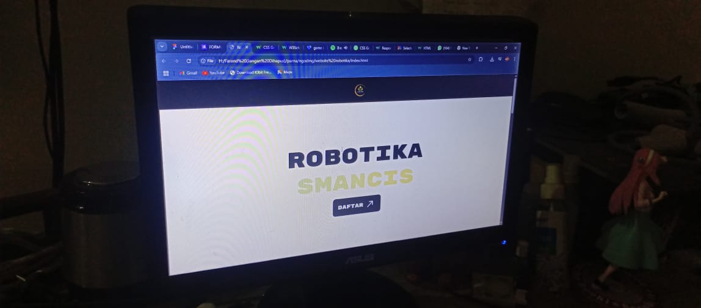

Project Line Follower
Memanfaatkan motor shield L293D, 5 sensor inframerah, dua motor, dan yang terutama Arduino UNO. Robot ini akan berjalan mengikuti lintasan garis hitam yang sudah disediakan dan akan berhenti apabila garis hitam terdeteksi pada seluruh sensor.

Website Portofolio
Pembuatan website ini murni menggunakan HTML dan CSS. Pengembangan website ini dilakukan secara kolektif dan sudah responsive pada berbagai perangkat seperti handphone, tablet, dan laptop atau personal computer.